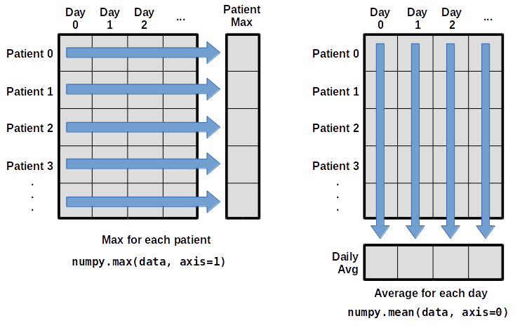

import numpyAnalyzing Patient Data
- Explain what a library is and what libraries are used for.
- Import a Python library and use the functions it contains.
- Read tabular data from a file into a program.
- Select individual values and subsections from data.
- Perform operations on arrays of data.
- How can I process tabular data files in Python?
Words are useful, but what’s more useful are the sentences and stories we build with them. Similarly, while a lot of powerful, general tools are built into Python, specialized tools built up from these basic units live in libraries that can be called upon when needed.
Loading data into Python
To begin processing the clinical trial inflammation data, we need to load it into Python. We can do that using a library called NumPy, which stands for Numerical Python. In general, you should use this library when you want to do fancy things with lots of numbers, especially if you have matrices or arrays. To tell Python that we’d like to start using NumPy, we need to import it:
Importing a library is like getting a piece of lab equipment out of a storage locker and setting it up on the bench. Libraries provide additional functionality to the basic Python package, much like a new piece of equipment adds functionality to a lab space. Just like in the lab, importing too many libraries can sometimes complicate and slow down your programs - so we only import what we need for each program.
Once we’ve imported the library, we can ask the library to read our data file for us:
numpy.loadtxt(fname='data/inflammation-01.csv', delimiter=',')array([[0., 0., 1., ..., 3., 0., 0.],
[0., 1., 2., ..., 1., 0., 1.],
[0., 1., 1., ..., 2., 1., 1.],
...,
[0., 1., 1., ..., 1., 1., 1.],
[0., 0., 0., ..., 0., 2., 0.],
[0., 0., 1., ..., 1., 1., 0.]])The expression numpy.loadtxt(...) is a function call that asks Python to run the function loadtxt which belongs to the numpy library. The dot notation in Python is used most of all as an object attribute/property specifier or for invoking its method. object.property will give you the object.property value, object_name.method() will invoke on object_name method.
As an example, John Smith is the John that belongs to the Smith family. We could use the dot notation to write his name smith.john, just as loadtxt is a function that belongs to the numpy library.
numpy.loadtxt has two parameters: the name of the file we want to read and the delimiter that separates values on a line. These both need to be character strings (or strings for short), so we put them in quotes.
Since we haven’t told it to do anything else with the function’s output, the notebook displays it. In this case, that output is the data we just loaded. By default, only a few rows and columns are shown (with ... to omit elements when displaying big arrays). Note that, to save space when displaying NumPy arrays, Python does not show us trailing zeros, so 1.0 becomes 1..
Our call to numpy.loadtxt read our file but didn’t save the data in memory. To do that, we need to assign the array to a variable. In a similar manner to how we assign a single value to a variable, we can also assign an array of values to a variable using the same syntax. Let’s re-run numpy.loadtxt and save the returned data:
data = numpy.loadtxt(fname='inflammation-01.csv', delimiter=',')This statement doesn’t produce any output because we’ve assigned the output to the variable data. If we want to check that the data have been loaded, we can print the variable’s value:
print(data)[[ 0. 0. 1. ..., 3. 0. 0.]
[ 0. 1. 2. ..., 1. 0. 1.]
[ 0. 1. 1. ..., 2. 1. 1.]
...,
[ 0. 1. 1. ..., 1. 1. 1.]
[ 0. 0. 0. ..., 0. 2. 0.]
[ 0. 0. 1. ..., 1. 1. 0.]]Now that the data are in memory, we can manipulate them. First, let’s ask what type of thing data refers to:
print(type(data))<class 'numpy.ndarray'>The output tells us that data currently refers to an N-dimensional array, the functionality for which is provided by the NumPy library. These data correspond to arthritis patients’ inflammation. The rows are the individual patients, and the columns are their daily inflammation measurements.
With the following command, we can see the array’s shape:
print(data.shape)(60, 40)The output tells us that the data array variable contains 60 rows and 40 columns. When we created the variable data to store our arthritis data, we did not only create the array; we also created information about the array, called members or attributes. This extra information describes data in the same way an adjective describes a noun. data.shape is an attribute of data which describes the dimensions of data. We use the same dotted notation for the attributes of variables that we use for the functions in libraries because they have the same part-and-whole relationship.
If we want to get a single number from the array, we must provide an index in square brackets after the variable name, just as we do in math when referring to an element of a matrix. Our inflammation data has two dimensions, so we will need to use two indices to refer to one specific value:
print('first value in data:', data[0, 0])first value in data: 0.0print('middle value in data:', data[29, 19])middle value in data: 16.0The expression data[29, 19] accesses the element at row 30, column 20. While this expression may not surprise you, data[0, 0] might. Programming languages like Fortran, MATLAB and R start counting at 1 because that’s what human beings have done for thousands of years. Languages in the C family (including C++, Java, Perl, and Python) count from 0 because it represents an offset from the first value in the array (the second value is offset by one index from the first value). This is closer to the way that computers represent arrays (if you are interested in the historical reasons behind counting indices from zero, you can read Mike Hoye’s blog post). As a result, if we have an M×N array in Python, its indices go from 0 to M-1 on the first axis and 0 to N-1 on the second. It takes a bit of getting used to, but one way to remember the rule is that the index is how many steps we have to take from the start to get the item we want.
!['data' is a 3 by 3 numpy array containing row 0: ['A', 'B', 'C'], row 1: ['D', 'E', 'F'], androw 2: ['G', 'H', 'I']. Starting in the upper left hand corner, data[0, 0] = 'A', data[0, 1] = 'B',data[0, 2] = 'C', data[1, 0] = 'D', data[1, 1] = 'E', data[1, 2] = 'F', data[2, 0] = 'G',data[2, 1] = 'H', and data[2, 2] = 'I', in the bottom right hand corner.](fig/python-zero-index.svg)
Slicing data
An index like [30, 20] selects a single element of an array, but we can select whole sections as well. For example, we can select the first ten days (columns) of values for the first four patients (rows) like this:
print(data[0:4, 0:10])[[ 0. 0. 1. 3. 1. 2. 4. 7. 8. 3.]
[ 0. 1. 2. 1. 2. 1. 3. 2. 2. 6.]
[ 0. 1. 1. 3. 3. 2. 6. 2. 5. 9.]
[ 0. 0. 2. 0. 4. 2. 2. 1. 6. 7.]]The slice 0:4 means, “Start at index 0 and go up to, but not including, index 4”. Again, the up-to-but-not-including takes a bit of getting used to, but the rule is that the difference between the upper and lower bounds is the number of values in the slice.
We don’t have to start slices at 0:
print(data[5:10, 0:10])[[ 0. 0. 1. 2. 2. 4. 2. 1. 6. 4.]
[ 0. 0. 2. 2. 4. 2. 2. 5. 5. 8.]
[ 0. 0. 1. 2. 3. 1. 2. 3. 5. 3.]
[ 0. 0. 0. 3. 1. 5. 6. 5. 5. 8.]
[ 0. 1. 1. 2. 1. 3. 5. 3. 5. 8.]]We also don’t have to include the upper and lower bound on the slice. If we don’t include the lower bound, Python uses 0 by default; if we don’t include the upper, the slice runs to the end of the axis, and if we don’t include either (i.e., if we use ‘:’ on its own), the slice includes everything:
small = data[:3, 36:]
print('small is:')
print(small)The above example selects rows 0 through 2 and columns 36 through to the end of the array.
small is:
[[ 2. 3. 0. 0.]
[ 1. 1. 0. 1.]
[ 2. 2. 1. 1.]]Analyzing data
NumPy has several useful functions that take an array as input to perform operations on its values. If we want to find the average inflammation for all patients on all days, for example, we can ask NumPy to compute data’s mean value:
print(numpy.mean(data))6.14875mean is a function that takes an array as an argument.
Let’s use three other NumPy functions to get some descriptive values about the dataset. We’ll also use multiple assignment, a convenient Python feature that will enable us to do this all in one line.
maxval, minval, stdval = numpy.amax(data), numpy.amin(data), numpy.std(data)
print('maximum inflammation:', maxval)
print('minimum inflammation:', minval)
print('standard deviation:', stdval)Here we’ve assigned the return value from numpy.amax(data) to the variable maxval, the value from numpy.amin(data) to minval, and so on.
maximum inflammation: 20.0
minimum inflammation: 0.0
standard deviation: 4.61383319712When analyzing data, though, we often want to look at variations in statistical values, such as the maximum inflammation per patient or the average inflammation per day. One way to do this is to create a new temporary array of the data we want, then ask it to do the calculation:
patient_0 = data[0, :] # 0 on the first axis (rows), everything on the second (columns)
print('maximum inflammation for patient 0:', numpy.amax(patient_0))maximum inflammation for patient 0: 18.0We don’t actually need to store the row in a variable of its own. Instead, we can combine the selection and the function call:
print('maximum inflammation for patient 2:', numpy.amax(data[2, :]))maximum inflammation for patient 2: 19.0What if we need the maximum inflammation for each patient over all days (as in the next diagram on the left) or the average for each day (as in the diagram on the right)? As the diagram below shows, we want to perform the operation across an axis:

To support this functionality, most array functions allow us to specify the axis we want to work on. If we ask for the average across axis 0 (rows in our 2D example), we get:
print(numpy.mean(data, axis=0))[ 0. 0.45 1.11666667 1.75 2.43333333 3.15
3.8 3.88333333 5.23333333 5.51666667 5.95 5.9
8.35 7.73333333 8.36666667 9.5 9.58333333
10.63333333 11.56666667 12.35 13.25 11.96666667
11.03333333 10.16666667 10. 8.66666667 9.15 7.25
7.33333333 6.58333333 6.06666667 5.95 5.11666667 3.6
3.3 3.56666667 2.48333333 1.5 1.13333333
0.56666667]As a quick check, we can ask this array what its shape is:
print(numpy.mean(data, axis=0).shape)(40,)The expression (40,) tells us we have an N×1 vector, so this is the average inflammation per day for all patients. If we average across axis 1 (columns in our 2D example), we get:
print(numpy.mean(data, axis=1))[ 5.45 5.425 6.1 5.9 5.55 6.225 5.975 6.65 6.625 6.525
6.775 5.8 6.225 5.75 5.225 6.3 6.55 5.7 5.85 6.55
5.775 5.825 6.175 6.1 5.8 6.425 6.05 6.025 6.175 6.55
6.175 6.35 6.725 6.125 7.075 5.725 5.925 6.15 6.075 5.75
5.975 5.725 6.3 5.9 6.75 5.925 7.225 6.15 5.95 6.275 5.7
6.1 6.825 5.975 6.725 5.7 6.25 6.4 7.05 5.9 ]which is the average inflammation per patient across all days.
Slicing Strings
A section of an array is called a slice. We can take slices of character strings as well:
element = 'oxygen'
print('first three characters:', element[0:3])
print('last three characters:', element[3:6])first three characters: oxy
last three characters: genWhat is the value of element[:4]? What about element[4:]? Or element[:]?
Solution (Solution).
oxyg
en
oxygenWhat is element[-1]? What is element[-2]?
Solution (Solution).
n
eGiven those answers, explain what element[1:-1] does.
Solution (Solution). Creates a substring from index 1 up to (not including) the final index, effectively removing the first and last letters from ‘oxygen’
How can we rewrite the slice for getting the last three characters of element, so that it works even if we assign a different string to element? Test your solution with the following strings: carpentry, clone, hi.
Solution (Solution).
element = 'oxygen'
print('last three characters:', element[-3:])
element = 'carpentry'
print('last three characters:', element[-3:])
element = 'clone'
print('last three characters:', element[-3:])
element = 'hi'
print('last three characters:', element[-3:])last three characters: gen
last three characters: try
last three characters: one
last three characters: hiThin Slices
The expression element[3:3] produces an empty string, i.e., a string that contains no characters. If data holds our array of patient data, what does data[3:3, 4:4] produce? What about data[3:3, :]?
Solution (Solution).
array([], shape=(0, 0), dtype=float64)
array([], shape=(0, 40), dtype=float64)Stacking Arrays
Arrays can be concatenated and stacked on top of one another, using NumPy’s vstack and hstack functions for vertical and horizontal stacking, respectively.
import numpy
A = numpy.array([[1, 2, 3], [4, 5, 6], [7, 8, 9]])
print('A = ')
print(A)
B = numpy.hstack([A, A])
print('B = ')
print(B)
C = numpy.vstack([A, A])
print('C = ')
print(C)A =
[[1 2 3]
[4 5 6]
[7 8 9]]
B =
[[1 2 3 1 2 3]
[4 5 6 4 5 6]
[7 8 9 7 8 9]]
C =
[[1 2 3]
[4 5 6]
[7 8 9]
[1 2 3]
[4 5 6]
[7 8 9]]Write some additional code that slices the first and last columns of A, and stacks them into a 3x2 array. Make sure to print the results to verify your solution.
Solution (Solution). A ‘gotcha’ with array indexing is that singleton dimensions are dropped by default. That means A[:, 0] is a one dimensional array, which won’t stack as desired. To preserve singleton dimensions, the index itself can be a slice or array. For example, A[:, :1] returns a two dimensional array with one singleton dimension (i.e. a column vector).
D = numpy.hstack((A[:, :1], A[:, -1:]))
print('D = ')
print(D)D =
[[1 3]
[4 6]
[7 9]]Solution (Solution). An alternative way to achieve the same result is to use Numpy’s delete function to remove the second column of A. If you’re not sure what the parameters of numpy.delete mean, use the help files.
D = numpy.delete(arr=A, obj=1, axis=1)
print('D = ')
print(D)D =
[[1 3]
[4 6]
[7 9]]Change In Inflammation
The patient data is longitudinal in the sense that each row represents a series of observations relating to one individual. This means that the change in inflammation over time is a meaningful concept. Let’s find out how to calculate changes in the data contained in an array with NumPy.
The numpy.diff() function takes an array and returns the differences between two successive values. Let’s use it to examine the changes each day across the first week of patient 3 from our inflammation dataset.
patient3_week1 = data[3, :7]
print(patient3_week1) [0. 0. 2. 0. 4. 2. 2.]Calling numpy.diff(patient3_week1) would do the following calculations
[ 0 - 0, 2 - 0, 0 - 2, 4 - 0, 2 - 4, 2 - 2 ]and return the 6 difference values in a new array.
numpy.diff(patient3_week1)array([ 0., 2., -2., 4., -2., 0.])Note that the array of differences is shorter by one element (length 6).
When calling numpy.diff with a multi-dimensional array, an axis argument may be passed to the function to specify which axis to process. When applying numpy.diff to our 2D inflammation array data, which axis would we specify?
Solution (Solution). Since the row axis (0) is patients, it does not make sense to get the difference between two arbitrary patients. The column axis (1) is in days, so the difference is the change in inflammation – a meaningful concept.
numpy.diff(data, axis=1)If the shape of an individual data file is (60, 40) (60 rows and 40 columns), what would the shape of the array be after you run the diff() function and why?
Solution (Solution). The shape will be (60, 39) because there is one fewer difference between columns than there are columns in the data.
How would you find the largest change in inflammation for each patient? Does it matter if the change in inflammation is an increase or a decrease?
Solution (Solution). By using the numpy.amax() function after you apply the numpy.diff() function, you will get the largest difference between days.
numpy.amax(numpy.diff(data, axis=1), axis=1)array([ 7., 12., 11., 10., 11., 13., 10., 8., 10., 10., 7.,
7., 13., 7., 10., 10., 8., 10., 9., 10., 13., 7.,
12., 9., 12., 11., 10., 10., 7., 10., 11., 10., 8.,
11., 12., 10., 9., 10., 13., 10., 7., 7., 10., 13.,
12., 8., 8., 10., 10., 9., 8., 13., 10., 7., 10.,
8., 12., 10., 7., 12.])If inflammation values decrease along an axis, then the difference from one element to the next will be negative. If you are interested in the magnitude of the change and not the direction, the numpy.absolute() function will provide that.
Notice the difference if you get the largest absolute difference between readings.
numpy.amax(numpy.absolute(numpy.diff(data, axis=1)), axis=1)array([ 12., 14., 11., 13., 11., 13., 10., 12., 10., 10., 10.,
12., 13., 10., 11., 10., 12., 13., 9., 10., 13., 9.,
12., 9., 12., 11., 10., 13., 9., 13., 11., 11., 8.,
11., 12., 13., 9., 10., 13., 11., 11., 13., 11., 13.,
13., 10., 9., 10., 10., 9., 9., 13., 10., 9., 10.,
11., 13., 10., 10., 12.])- Import a library into a program using
import libraryname. - Use the
numpylibrary to work with arrays in Python. - The expression
array.shapegives the shape of an array. - Use
array[x, y]to select a single element from a 2D array. - Array indices start at 0, not 1.
- Use
low:highto specify aslicethat includes the indices fromlowtohigh-1. - Use
# some kind of explanationto add comments to programs. - Use
numpy.mean(array),numpy.amax(array), andnumpy.amin(array)to calculate simple statistics. - Use
numpy.mean(array, axis=0)ornumpy.mean(array, axis=1)to calculate statistics across the specified axis.